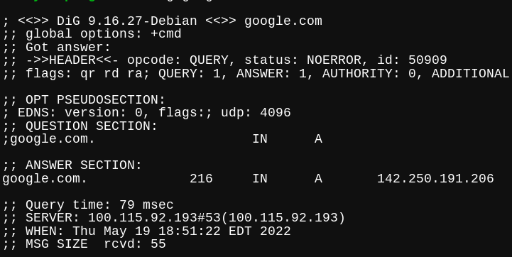

!!!USING THESE TOOLS WITHOUT PERMISSION IS ILLEGAL. IF YOU USE THEM, YOU CAN BE SENT TO JAIL IF YOU ARE CAUGHT!!!

Nmap is a vulnerability scanner that scans all the open ports at particular IP address.
Installing NMAP is just like installing ProxyChains and Medusa. You use your OS's package manager to install it. The command for Debian/Debian-Based systems to install NMAP is 'sudo apt-get install nmap'.
Using NMAP is actually extremely easy, but in some places, illegal. The syntax for NMAP is: nmap [ <Scan Type> ...] [ <Options> ] { <target specification> }
First, we need to know our targets' IP address. If it is a web target, we use the 'dig (website url, just without the http:// part)' command. For example: 'dig google.com', and the IP will be shown in the answer section.
Now that we have our target IP address, we can start using our scan type.
Some examples are:
-sS: TCP syn port scan
-sT: TCP connect port scan
–sU: UDP port scan
–sA: TCP ack port scan
-Pn: only port scan
-sn: only host discover
-PR: arp discovery on a local network
-n: disable DNS resolution
-p-: scan all ports
-F: fast port scan
-p: specify a port or port range
(These examples are taken from https://edureka.co/blog/nmap-tutorial/#scan-types)
With this information, you can start using NMAP! Some examples for full-fledged scans are:
nmap -p 1-30 192.168.1.1
nmap -p- 192.168.1.1
nmap -F 192.168.1.1
nmap -sS 192.168.1.1
nmap -sT 192.168.1.1
nmap –sU 192.168.1.1
(These examples are taken from https://edureka.co/blog/nmap-tutorial/#scan-types)
Thats how to use NMAP!
Some other websites that are amazing for hacking are:
-Null Byte (here)
-Prophet Hacker (here)
-Cybrary (here)
-Offensive Security (here)
-Null Byte YouTube Channel (here)